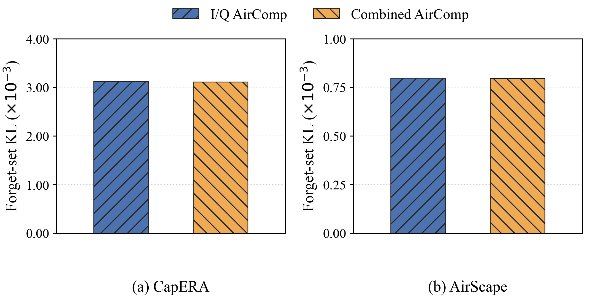
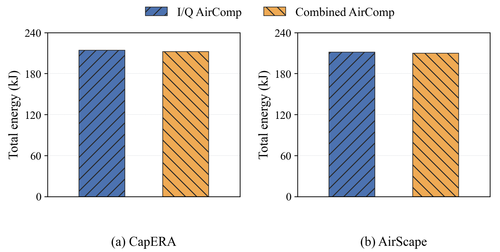
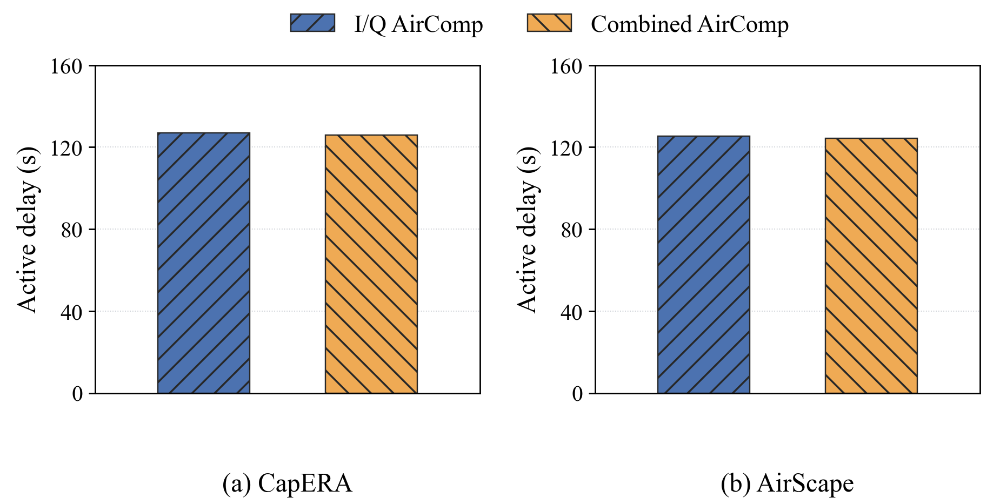
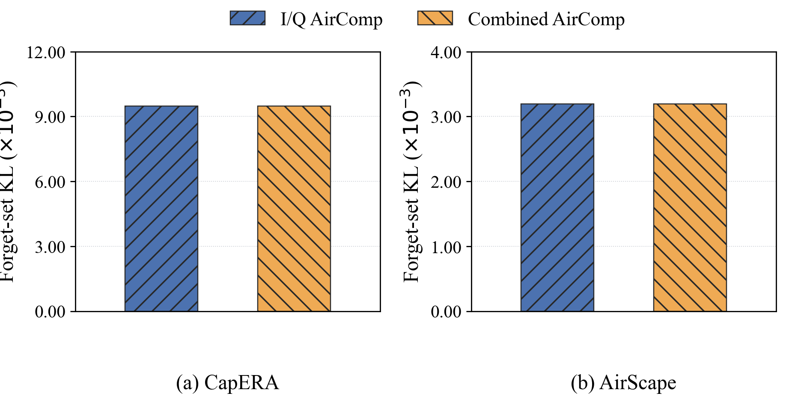
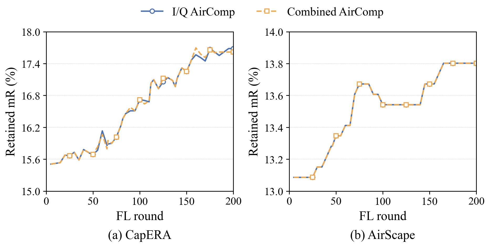
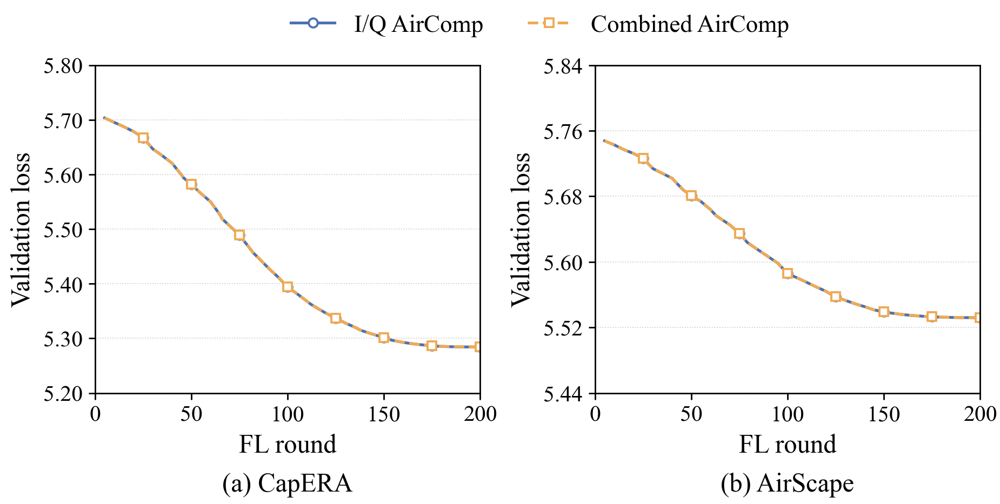

Experiment A: Combined AirComp versus I/Q AirComp
Same retain0.95/late_uniform100 learning policy in both arms; 200 FL rounds, 45 requests and 225 FU steps. Same frozen features, initialization, sampling seeds, channels, power caps, head candidates, common task-distortion budget and charged HVP work. Both methods process FL and FU simultaneously.
Combined transmits the true sum on one real stream. I/Q transmits separate updates on two quadratures of one complex stream and enforces additional component-MSE bounds. Both finally apply the summed update. An I/Q gain is therefore not assumed.
The shared warm start contains FL rounds1–20. Energy and delay cover the ensuing180 FL rounds and225 FU cycles, including computation/curvature, uplink/downlink, circuits and hovering. Common warm-start cost and fixed travel energy are excluded. No hardware wall-clock claim is made.
The main KL plot uses the SAME retained-only late_uniform100 retraining model for both methods. The common-reference KL plot is also included. Neither reference is used as a training teacher. Lower KL is closer to this reference, not a certified deletion guarantee.
Curves use measured values, with markers at multiples of25; no smoothing, manual shifts or artificial error bars. This is one paired development seed; small differences do not establish statistical superiority.
I/Q minus Combined / percentage reductions (negative reduction means I/Q uses more or has higher KL):
{'dataset': 'CapERA', 'mR_change_pp': 0.0651041666666714, 'matched_KL_reduction_percent': -0.27084956163465623, 'common_KL_reduction_percent': -0.1346291964170243, 'energy_reduction_percent': -0.9272228457638976, 'delay_reduction_percent': -0.9272322018806678}
{'dataset': 'AirScape', 'mR_change_pp': 0.0, 'matched_KL_reduction_percent': -0.36987515257587145, 'common_KL_reduction_percent': -0.1792617190890189, 'energy_reduction_percent': -0.8072841120740692, 'delay_reduction_percent': -0.8072505517767947}




